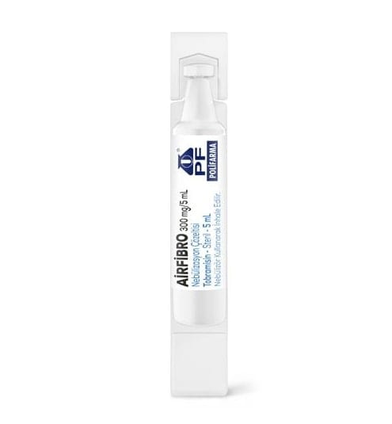

Airfibro 300 mg/5 ml Nebülizasyon Çözeltisi, 56 ADET

Ne için kullanılır
KT · Bölüm 1AİRFİBRO, bir antibiyotik olan tobramisin maddesini içeren bir ilaçtır. Bu antibiyotik aminoglikozitler sınıfındandır. AİRFİBRO, uygun bir kompresöre bağlandığında ilacın solunum yolu ile alınmasına imkan veren spesifik bir cihaz (nebulizör) yardımıyla kullanılan bir çözeltidir; çözelti kullanıma hazır flakonlar içerisinde bulunmaktadır.
AİRFİBRO, altı yaş ve üstündeki kistik fibroz hastalarında Pseudomonas aeruginosa adlı bakteriye bağlı akciğer enfeksiyonlarının tedavisinde kullanılır. Pseudomonas aeruginosa, kistik fibroz hastalarının neredeyse tümünü yaşamlarının bir döneminde enfekte eden, çok sık karşılaşılan bir bakteridir. Bazı hastalar bu enfeksiyonu yaşamlarının geç dönemine kadar geçirmezken, bazıları da çok erken dönemde geçirirler. Kistik fibroz hastalarına en çok zarar veren bakterilerden biridir. Enfeksiyonun doğru bir şekilde tedavi edilmemesi, akciğerlerin zarar görmeye devam etmesine ve solunum ile ilgili başka sıkıntıların da ortaya çıkmasına yol açacaktır. AİRFİBRO’yu teneffüs ettiğinizde antibiyotik doğrudan akciğerlerinize ulaşarak, enfeksiyona yol açan bu bakteri ile mücadele eder ve nefes alıp vermenizi rahatlatır.
AİRFİBRO, teneffüs edilerek kullanılır ve kullanıma hazır flakon şeklindedir. Her bir kutuda 28 gün için yeterli sayıda, yani 56 adet flakon bulunmaktadır. İlacın günde iki kez, 12 saat arayla kullanılması gerektiğinden bir folyo torba 7 günlük ilaç ihtiyacını karşılamaktadır. Her flakon, tek seferde kullanılmak üzere 300 mg tobramisin içermektedir.
Bu ilaçla en iyi sonuçları elde edebilmek için lütfen bu kullanma talimatında belirtilenlere uygun olarak kullanınız.